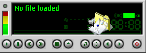
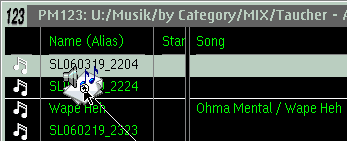

PM123 supports Drag & Drop at the main window and the different playlist windows (Playlist, Playlist Manager, Bookmarks).
 In general you can drop one or more files, folders and URLs from other applications or objects from a playlist or bookmark window to the main window. This will cause the dropped items to be loaded, played and/or enqueued, depending on the settings in the Properties dialog.
If more than one item is dropped, the items are placed or added in the default playlist. This playlist is loaded to the player if not yet done.
 When you drop files, folders and/or URLs from other applications to a playlist, PM123 always creates references to the dropped items, except for URLs which are copied by value. PM123 will never move or delete the original files.
When you drag & drop inside a playlist window a move operation is done by default. When you drag & drop between different playlist windows, a copy is created by default. You may alter this behaviour with the Shift key while dropping.
When a folder is dropped to PM123 it's content is scanned. Whether subfolders should be scanned too, is a setting in the Properties dialog. However, PM123 always stores only a reference to the folder. So if the folder content changes (including subfolders), this is sooner or later reflected to PM123. You can enforce this by selecting "Reload" from the context menu.